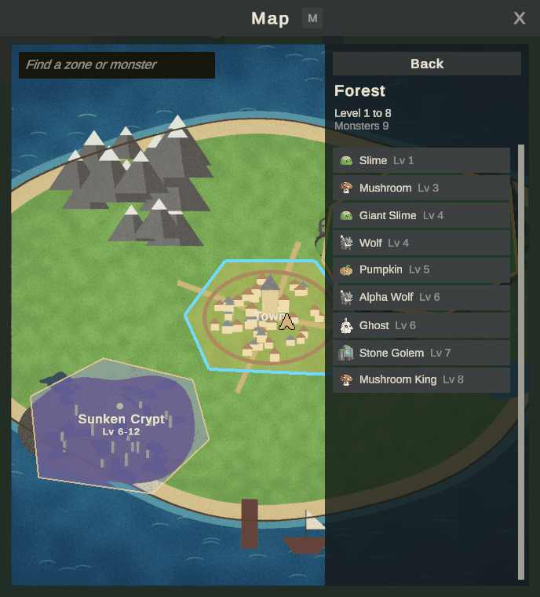
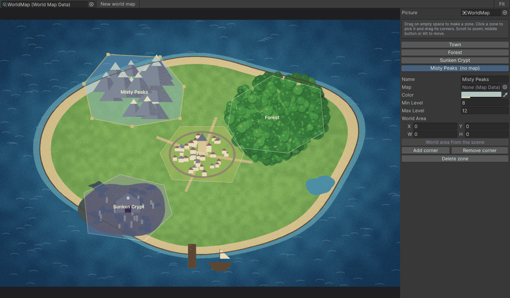
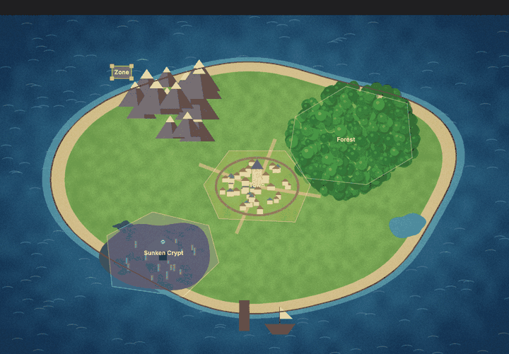
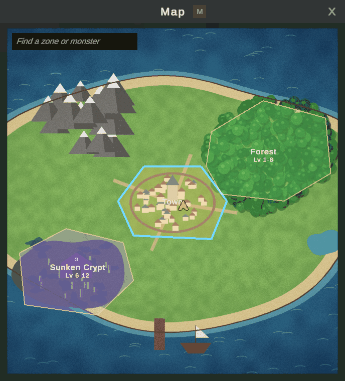

Desenhar o mapa do mundo
A janela do mapa (M) pode mostrar uma imagem do mundo inteiro com uma zona por mapa. Os jogadores veem onde estão, o nome e os níveis de cada zona, e clicam em uma zona para listar os monstros dela e o que eles dropam. Este guia adiciona uma zona à ilha do exemplo.

1. Abra o editor
Abra KitARPG > World Map Editor. Ele abre o mapa do mundo do banco de dados; o do exemplo é WorldMap em Samples/Starter/Data. Para o seu próprio jogo, pressione New world map e defina a Picture: qualquer sprite do seu mundo, pintado ou desenhado. A ilha do exemplo é pintada por Art/Tools/make_world_map.py.

2. Desenhe uma zona
- Arraste sobre um espaço vazio da imagem. Uma zona retangular aparece, já escolhida.
- Pressione Add corner à direita quantas vezes precisar. Cada uma divide o lado mais longo.
- Arraste os cantos ao redor da área. Aqui eles contornam as montanhas.

Role para dar zoom, e arraste com o botão do meio (ou com Alt) para se mover.
3. Configure
Com a zona escolhida, à direita:
| Campo | O que faz |
|---|---|
| Name | Mostrado na zona. Vazio, usa o nome do mapa dela. |
| Map | O mapa que ela representa. Os jogadores nesse mapa se veem nesta zona, e os monstros dele são listados. |
| Color | O preenchimento da zona. |
| Min Level, Max Level | Os níveis mostrados abaixo do nome. Em 0, vêm dos monstros do mapa. |
| World Area | Quanto terreno a cena do mapa cobre, para que os jogadores apareçam no lugar certo da zona. Pressione World area from the scene para lê-lo. |
4. Teste
Pressione Play, entre no jogo e pressione M. Arraste para se mover, role para dar zoom, clique em uma zona para ver os monstros dela e em um monstro para ver os drops dele. A busca no topo encontra zonas e monstros pelo nome.

Os monstros de um mapa vêm dos spawners dele: depois de adicionar um, pressione Read from scene no mapa no Game Database (World > Maps).
Próximos passos
- Mapas, portais e o minimapa: Mapas.